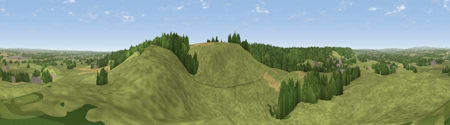

Viewpoint near Hanbury
#22343 in England · top 25% of its area beats it · near HanburyThe view, rendered

A 360° render of this exact spot computed from the terrain model, tree cover and land cover — summer colours, afternoon light, calibrated against photographs of famous viewpoints. Real trees, hedges and buildings will differ in detail.
The panorama
Grey silhouette: terrain skyline in each direction (720 bearings, Earth curvature and refraction included). Dashed green: skyline with trees (+15 m) and buildings (+8 m) as obstacles. Blue strip: how far the ground is visible on each bearing.
Where the view opens
Wedge length = distance to the farthest visible ground on that bearing (vegetation-aware). Rings at 10, 25 and 50 km.
What fills the view
81% grassland · 12% woodland · 5% cropland · 1% built-up
Angular shares of the visible panorama (visual magnitude), not map area. Landscape diversity 0.27 (0–1 Shannon).
Key numbers
More beautiful places nearby
The staircase of upgrades: each row has a higher view potential than everything closer. Driving times are estimates from straight-line distance, calibrated against real road routing — check an actual route before setting out.
| Place | Direction | Drive | Score |
|---|---|---|---|
| Viewpoint near Hanbury | ESE · 0 km | ~1 min | 54.7 |
| Viewpoint near Newton Solney | ESE · 11 km | ~21 min | 55.0 |
| Viewpoint near Shirley | NNE · 15 km | ~27 min | 55.6 |
| Viewpoint near Hollington | NW · 16 km | ~28 min | 57.2 |
| Viewpoint near Hartshorne | ESE · 18 km | ~32 min | 59.5 |
| Viewpoint near Wootton | NNW · 19 km | ~32 min | 66.1 |
| Viewpoint near Wootton | NNW · 19 km | ~32 min | 74.4 |
| Viewpoint near Wootton | NNW · 19 km | ~33 min | 74.8 |
52.85262, -1.75456 · source: screening · position refined by local search. Computed location — check access rights before visiting.